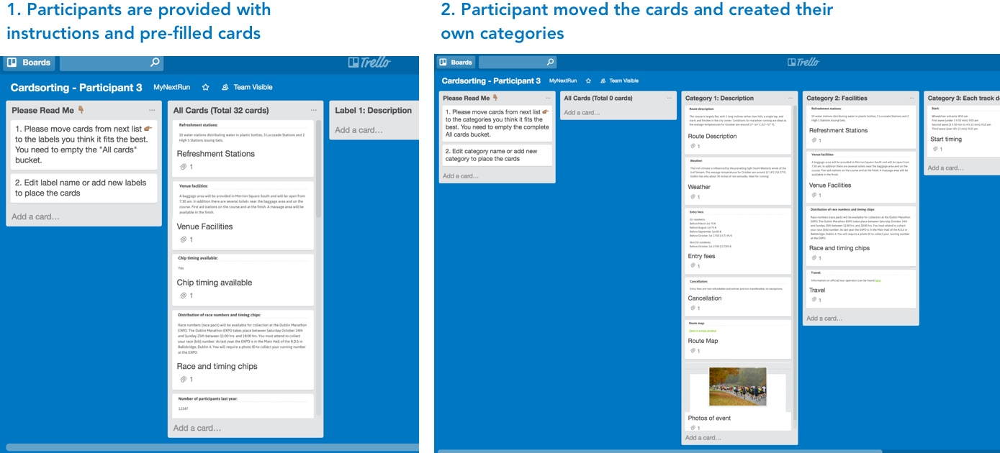
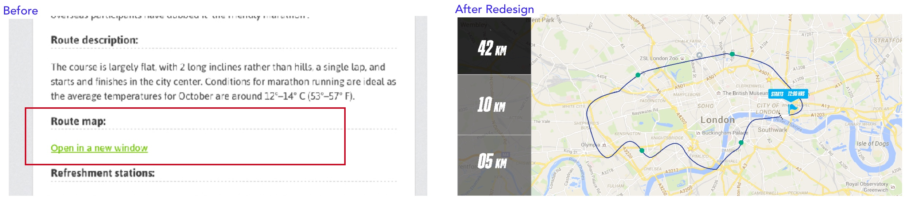

PROBLEM
I was hired to improve the User Experience as well as redesign the User Interface of their event page. The event page was a descriptive long page about the particular running event with a link to directly register on their website. A user would typically search the event and then click on a event to get to the event page. 80% of their user would interact with the event page on regular basis. However, the users would not register on the event page rather directly go to the event website. There was a heavy churn rate.
A user research was done by the team to understand the decline. Data presented showed that most of the users felt that the information presented was confusing and not easy to navigate (as shown in the picture below). This is mostly the case when the information architecture is broken. All the information were laid down as a scrollable long list without a logical flow, categorisation or proper labelling.
The team did realise it before but choose to put all the information in a single page to keep navigation to minimum and reducing the complexity of the UI.
INFORMATION ARCHITECTURE
I decided to use card sorting to understand how best the information could be laid down and to find out logical categorisations. Specifically, Open Card Sort since we were unsure about the categories.

Figure 2: Understanding the Business (Tool: Google Slides)
I asked the team to participate in the activity and to get 5 users to be participant. I used trello for the card sorting sessions since I was based remotely. I created individual boards for each participant and sent them a link with all the instructions. by copying the first template board.
We found a natural pattern when matched all the participants. This was how the design was inspired.
To make the interaction fluid and interactive without having to change any backend data model, it was important that a lot of information are still in the same page. Also, this would make navigation easier without having to go out of the main context. Therefore, during the User Interface design a lot of emphasis was given on icons, images, colors to add visual cues in a subtle way for easy navigation.
For instance the page had the route map that opens a new window which according to the user research done before showed pop-ups are annoying and there is performance problem when you interact with a pop-up.

Figure 3: Understanding the Users (Tool: Trello to built Persona for at least one user from each customer segment )